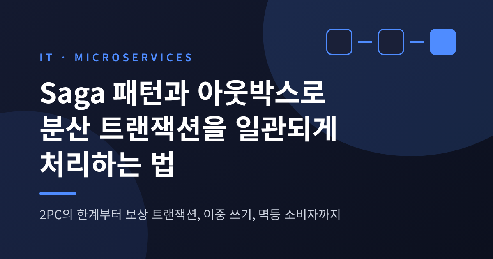
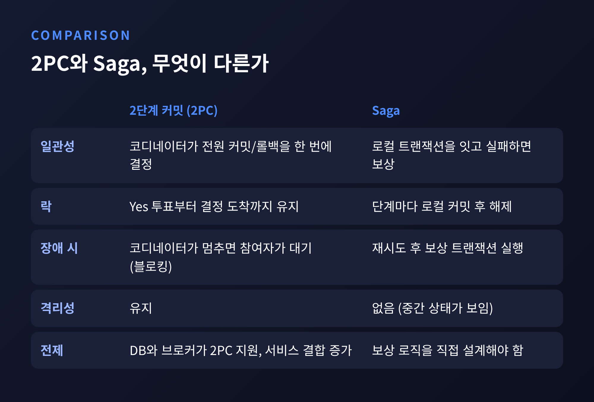
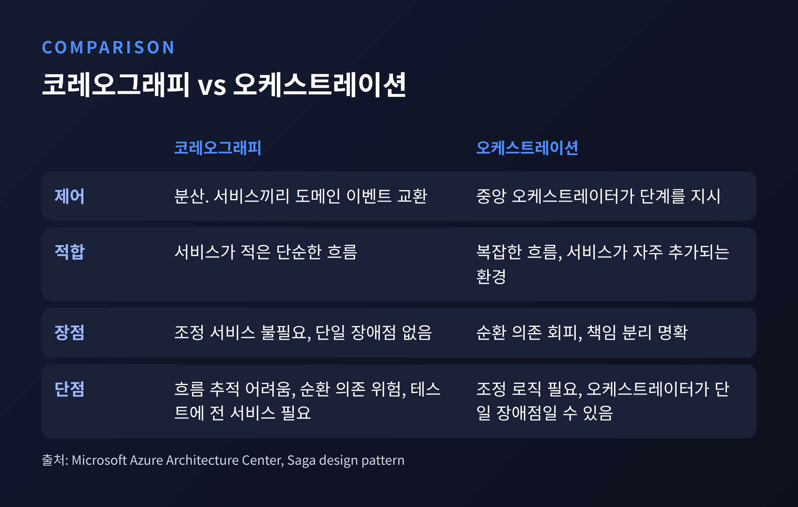
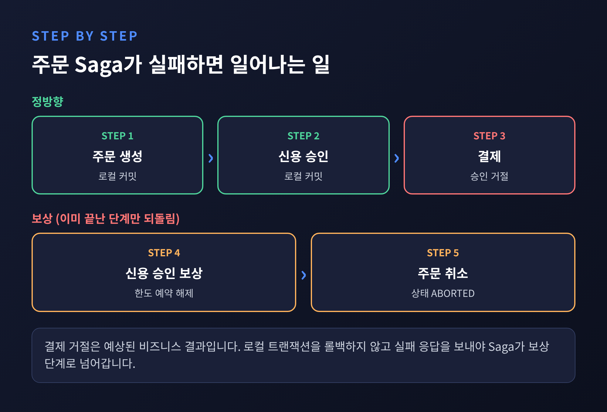
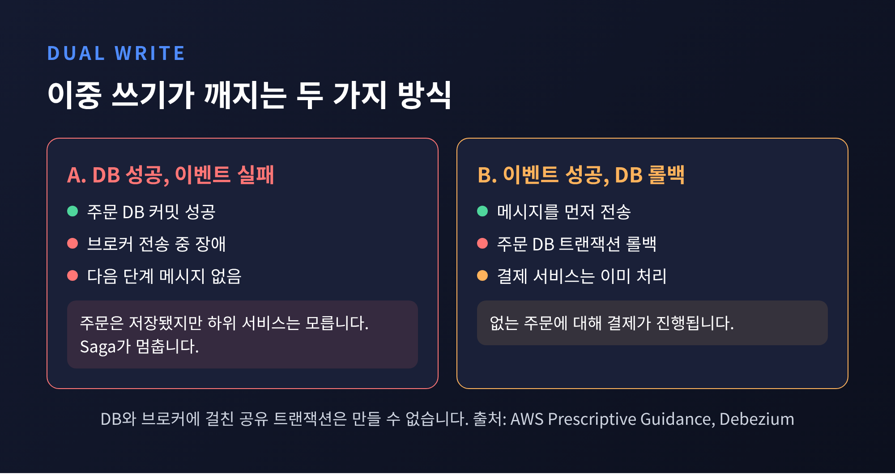
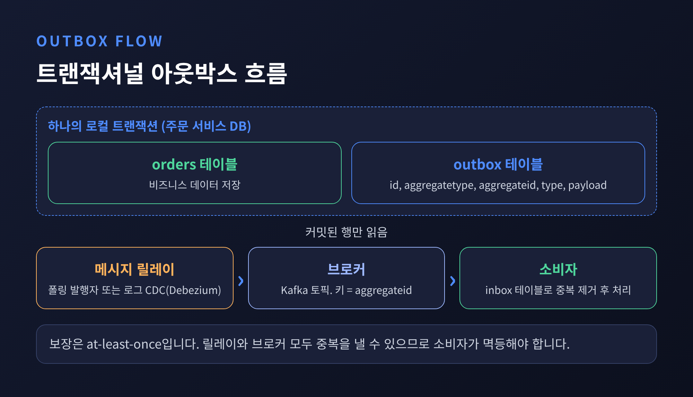
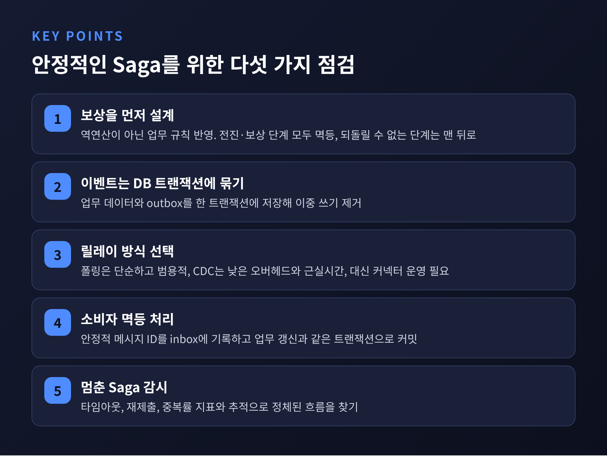

이번 글에서는 마이크로서비스에서 여러 서비스에 걸친 작업을 어떻게 일관되게 맞추는지 정리해 보겠습니다.
결론부터 말씀드리면 답은 세 조각입니다. 단계마다 로컬 트랜잭션으로 끊고 실패하면 보상하는 Saga, 이벤트 발행을 DB 커밋에 묶는 트랜잭셔널 아웃박스, 중복 메시지를 견디는 멱등 소비자입니다.
Spring에서는 이 조각들을 어디에 끼우는지까지 함께 살펴봅니다.
마이크로서비스는 보통 서비스별로 데이터베이스를 따로 둡니다. 데이터 캡슐화와 독립 확장, 장애 격리를 얻기 위해서입니다.
대신 ACID 보장은 한 DB 안에서만 유효합니다. 독립적으로 관리되는 여러 저장소에는 그대로 적용되지 않습니다.
주문, 결제, 재고가 각자의 DB를 쓴다고 해 보겠습니다. 주문은 저장됐는데 결제가 실패하면 무엇이 맞는 상태일까요. 하나의 @Transactional로는 이 질문에 답할 수 없습니다.
전통적인 해법은 2단계 커밋(2PC)입니다. 코디네이터가 모든 참여자에게 준비를 요청하고, 전원이 Yes로 투표하면 커밋을 지시합니다. 하나라도 No이거나 시간이 초과되면 롤백합니다.
문제는 투표 이후입니다. Yes를 던진 참여자는 코디네이터의 결정이 올 때까지 스스로 움직일 수 없습니다. 그동안 락도 잡고 있습니다. 코디네이터가 영구히 죽으면 참여자가 영영 풀리지 않을 수 있습니다. 위키백과는 이 블로킹을 프로토콜의 가장 큰 단점으로 꼽습니다.
여기에 DB나 브로커가 2PC를 지원하지 않을 수 있고, 서비스가 둘 모두에 묶이는 것도 부담입니다. 그래서 Microsoft와 microservices.io 모두 서비스 간 통신 구조에서는 2PC 대신 Saga를 권합니다.

Saga는 새로운 개념이 아닙니다. 1987년 Hector Garcia-Molina와 Kenneth Salem이 프린스턴 기술보고서로 발표한 논문 「SAGAS」에서 출발했습니다.
당시의 문제의식은 이랬습니다. 오래 걸리는 트랜잭션이 DB 자원을 붙잡고 있으면 짧고 흔한 트랜잭션까지 느려집니다. 그래서 긴 트랜잭션을 다른 트랜잭션과 섞여 실행될 수 있는 작은 트랜잭션의 연쇄로 나누고, 중간에 실패하면 보상 트랜잭션으로 앞선 작업을 되돌리자는 제안이었습니다.
단일 DB의 장기 트랜잭션을 위한 아이디어가 마이크로서비스 시대에 다시 쓰이고 있는 셈입니다.
오늘날의 정의는 간단합니다. 여러 서비스에 걸친 비즈니스 트랜잭션을 로컬 트랜잭션의 연쇄로 구현하고, 한 단계가 실패하면 이미 끝난 단계를 보상 트랜잭션으로 되돌립니다.
Microsoft 문서는 이 연쇄 안의 트랜잭션을 세 종류로 나눕니다.
이 구분이 설계의 출발점입니다. 외부 결제 승인이나 법적 효력이 있는 행위처럼 되돌릴 수 없는 단계는 모든 핵심 검증이 끝난 뒤로 미루는 편이 안전합니다.
Saga를 조율하는 방식은 두 가지입니다.
코레오그래피는 중앙 통제자가 없습니다. 각 서비스가 로컬 트랜잭션을 마치고 도메인 이벤트를 발행하면, 그 이벤트를 구독한 다른 서비스가 자기 트랜잭션을 시작합니다.
오케스트레이션은 중앙의 오케스트레이터가 각 참여자에게 "이 로컬 트랜잭션을 실행하라"고 지시합니다.
Microsoft 문서의 정리는 이렇습니다. 코레오그래피는 별도 조정 서비스가 필요 없고 단일 장애점도 없지만, 단계가 늘수록 흐름을 추적하기 어렵고 순환 의존이 생길 위험이 있습니다. 통합 테스트에도 모든 서비스가 떠 있어야 합니다.
오케스트레이션은 순환 의존을 피하고 책임이 분리되지만, 조정 로직을 따로 짜야 하고 오케스트레이터가 단일 장애점이 될 수 있습니다.
서비스 수가 적은 단순한 흐름에는 코레오그래피가, 복잡한 흐름이나 서비스가 자주 추가되는 환경에는 오케스트레이션이 어울립니다.

Debezium 팀이 InfoQ에 쓴 예제는 오케스트레이션을 택했습니다. 이유는 Saga의 상태가 한곳에 모이고, 참여자끼리 서로를 직접 호출하지 않아도 되기 때문입니다.
이 예제에서 주문 서비스가 오케스트레이터입니다. sagastate 테이블에 Saga의 현재 단계, 상태(STARTED, SUCCEEDED, ABORTING, ABORTED), 단계별 상태, 낙관적 락용 version을 기록합니다.
신용 승인은 성공했는데 결제가 실패하는 시나리오에서는 신용 승인을 보상 처리하고, Saga의 version이 0에서 4까지 오른 뒤 ABORTED로 끝납니다.

보상이라고 하면 롤백을 떠올리기 쉽습니다. 하지만 이미 커밋된 로컬 변경은 롤백할 수 없습니다. 새 트랜잭션으로 의미상 되돌릴 뿐입니다.
Microsoft 문서가 짚는 주의점이 몇 가지 있습니다.
첫째, 맹목적인 역연산은 위험합니다. 원래 상태로 되돌리다가 동시에 실행 중인 다른 인스턴스의 변경을 덮어쓸 수 있습니다. 항공권 취소가 전액 환불이 아닐 수 있듯, 업무 규칙도 반영해야 합니다.
둘째, 보상도 실패합니다. 그래서 진행 상황을 기록해 두었다가 실패한 지점부터 재개해야 하고, 자동 복구가 안 되면 상세한 알림과 함께 사람의 개입으로 넘겨야 합니다.
셋째, 전진 단계와 보상 단계 모두 멱등 명령으로 설계해야 합니다. 재시도가 일어나기 때문입니다.
넷째, 재시도를 먼저 하고 보상은 나중입니다. 일시적 오류로 보고 재시도하다가 소진되거나 비일시적 실패일 때 보상을 시작합니다.
한계도 분명합니다. Saga는 로컬 단계마다는 원자적이지만 전체로는 원자적이지 않습니다. 격리성도 없습니다. Debezium 팀은 격리 수준이 대략 read uncommitted와 비슷하다고 설명합니다.
같은 고객의 신용을 한 주문이 예약해 둔 동안 동시 주문이 거절될 수 있고, 첫 주문이 나중에 실패해도 그 거절은 되돌아오지 않습니다.
Microsoft 문서는 대응책으로 시맨틱 락(진행 중임을 알리는 애플리케이션 수준 플래그), 교환 가능한 갱신, 값 재읽기, 버전 기록 같은 기법을 제시합니다. 저위험 갱신에는 Saga를, 고위험 갱신에는 분산 트랜잭션을 쓰는 위험 기반 접근도 언급합니다.
Saga의 각 단계는 "내 DB를 갱신하고, 다음 단계를 부르는 메시지를 보낸다"는 두 동작으로 이뤄집니다. 여기에 함정이 있습니다. 이 두 동작을 하나의 원자적 연산으로 묶을 수 없다는 점입니다.
AWS 문서는 이 이중 쓰기(dual write)의 실패를 두 가지로 설명합니다.
하나는 DB 갱신은 성공했는데 이벤트 전송이 실패하는 경우입니다. 하위 서비스는 변경이 있었는지 모릅니다.
다른 하나는 이벤트는 나갔는데 DB 트랜잭션이 롤백되는 경우입니다. 존재하지 않는 항공권 예약에 대해 결제가 처리되는 식입니다.
트랜잭션 도중에 메시지를 보내면 롤백이 날 수 있습니다. 커밋 직후에 보내자니 그 사이에 서비스가 죽을 수 있습니다. 어느 순서를 택해도 구멍이 남습니다. Saga가 멈추거나, 있지도 않은 주문을 두고 계속 진행되는 것입니다.

해법은 발상을 바꾸는 것입니다. 브로커로 바로 보내지 않고, 비즈니스 데이터를 바꾸는 같은 트랜잭션 안에서 이벤트를 outbox 테이블에 함께 저장합니다.
이후 별도의 메시지 릴레이가 커밋된 outbox 행을 읽어 브로커로 발행합니다. 트랜잭션이 롤백되면 outbox 행도 함께 사라지므로 이벤트는 나가지 않습니다.
microservices.io의 표현으로는 메시지가 DB 트랜잭션이 커밋될 때, 그리고 그때에 한해서 전송이 보장됩니다. 전송 순서도 애플리케이션이 보낸 순서를 유지합니다.
Spring에서 모양은 이렇습니다. AWS 샘플도 같은 구조입니다.
@Transactional
public Order createOrder(OrderRequest req) {
Order saved = orderRepository.save(new Order(req));
outboxRepository.save(OutboxEvent.of(
"Order", saved.getId(), "OrderCreated", toJson(saved)));
return saved; // 둘 다 커밋되거나 둘 다 롤백된다
}Debezium이 권하는 outbox 테이블은 다섯 컬럼입니다. id는 중복 탐지에 쓰는 UUID, aggregatetype은 대상 토픽을 정하고, aggregateid는 Kafka 메시지 키가 되어 같은 aggregate의 이벤트가 한 파티션 안에서 순서를 지키게 합니다. type은 이벤트 유형, payload는 JSON 본문입니다.

outbox를 브로커로 옮기는 릴레이는 두 방식이 있습니다.
폴링 발행자는 outbox 테이블을 주기적으로 조회해 발행합니다. 모든 SQL DB에서 쓸 수 있다는 것이 장점입니다. 반면 순서대로 발행하기가 까다롭고, 일부 NoSQL에서는 쓸 수 없습니다. AWS 샘플은 SQS가 배치를 받아들인 뒤에야 outbox 행을 삭제하고, 순서는 타임스탬프와 시퀀스 번호로 지킵니다.
트랜잭션 로그 테일링, 곧 CDC는 DB의 로그를 읽습니다. MySQL이라면 binlog, Postgres라면 WAL입니다. Debezium은 테이블을 질의하지 않고 이 로그를 읽습니다.
앱이 outbox 행을 넣자마자 지우면 로그에는 INSERT와 DELETE가 남습니다. Debezium은 INSERT만 Kafka로 보내고 DELETE는 무시합니다. 테이블이 늘 비어 있으니 정리 잡도 필요 없습니다. Debezium 블로그는 폴링과 달리 이벤트 캡처가 매우 낮은 오버헤드로 거의 실시간에 일어나고, 종단 지연은 보통 수 초 이내라고 설명합니다.
Debezium의 EventRouter 변환은 aggregatetype을 기준으로 토픽을 정합니다. 기본 이름은 outbox.event. 뒤에 그 값을 붙인 형태입니다. id는 메시지 헤더로 실려 나가 소비자의 중복 제거에 쓰입니다.
단점도 있습니다. microservices.io는 로그 테일링이 아직 흔하지 않고 DB별 솔루션이 필요하다고 짚습니다. 운영할 커넥터가 하나 늘어난다는 뜻이기도 합니다.
Spring 안에서 가볍게 시작하고 싶다면 Spring Modulith의 이벤트 발행 레지스트리가 대안입니다. 이벤트를 발행하면 트랜잭션 리스너마다 한 항목이 원래 비즈니스 트랜잭션의 일부로 기록됩니다. 리스너가 성공하면 완료로 표시하고, 실패하면 그대로 남겨 재시도합니다.
@Component
class InventoryManagement {
@ApplicationModuleListener
void on(OrderCompleted event) { /* ... */ }
}spring.modulith.events.republish-outstanding-events-on-restart를 켜면 재시작 때 미완료 이벤트를 다시 발행합니다. 완료 모드는 기본이 UPDATE여서, 완료 항목이 쌓이므로 주기적인 정리가 필요합니다. @Externalized를 붙인 이벤트는 Kafka 같은 브로커로 내보낼 수 있고, 이 외부화도 레지스트리가 브로커 장애로부터 보호합니다.
문서가 "at-least-once"라는 말을 직접 쓰지는 않습니다만, 실패한 항목이 다시 제출되는 동작상 리스너는 같은 이벤트를 두 번 받을 수 있다고 보고 설계하는 편이 안전합니다.
폴링이든 CDC든 중복은 생깁니다. 릴레이가 발행한 뒤 기록하기 전에 죽을 수 있고, Debezium이 오프셋을 커밋하기 전에 죽으면 재시작 후 같은 이벤트를 다시 보낼 수 있습니다. Debezium이 보장하는 것은 at-least-once입니다.
Microsoft 문서의 표현을 빌리면 exactly-once 전달은 비현실적이고, 현실적인 목표는 at-least-once 전달에 중복을 무시하는 소비자를 더한 effectively-once입니다.
구현 원칙은 비교적 분명합니다.
BEGIN;
INSERT INTO inbox (message_id, consumer) VALUES (:msgId, :consumer); -- 중복이면 실패
UPDATE orders SET status = :status WHERE order_id = :orderId;
COMMIT; -- 커밋 뒤에만 ackInfoQ 예제는 Saga ID를 Kafka 메시지 키로 씁니다. 한 Saga의 메시지는 한 파티션에서 순서를 지키고, 서로 다른 Saga는 병렬로 처리됩니다.
결제 거절 같은 비즈니스상의 부정적 결과는 예상된 결과이지 실패가 아니라는 점도 짚습니다. 이를 이유로 로컬 트랜잭션을 롤백하면 응답이 나가지 않아 Saga가 멈추기 때문입니다.

정리하면 이렇습니다. 예전에는 2PC로 모든 참여자를 한 번에 커밋하려 했습니다. 지금은 로컬 트랜잭션을 잇고, 이벤트를 DB에 먼저 적고, 중복을 견디는 방식으로 일관성을 쌓습니다.
그러나 이 길이 공짜는 아닙니다. 자동 롤백이 없어 보상을 직접 설계해야 하고, 격리성이 없어 동시성 이상 현상에 대응책이 필요합니다. AWS 문서도 디버깅이 어렵고 서비스가 늘수록 복잡도가 커진다고 경고합니다. 끝나지 않고 멈춰 있는 Saga를 찾아내는 일은 InfoQ 예제도 미해결 과제로 남겨 두었습니다.
분기가 많은 복잡한 흐름이라면 워크플로 엔진을 고려해 볼 만하고, 서비스 경계를 잘못 그어 Saga가 지나치게 길어졌다면 설계를 먼저 의심하셔야 합니다.
끝으로 한 마디만 덧붙이겠습니다.
"분산 시스템에서 일관성은 한 번에 얻는 것이 아니라, 실패를 전제로 단계마다 쌓아 가는 것입니다."
다음에 주문과 결제를 가르는 경계를 그어야 한다면, 락을 오래 잡는 코디네이터 대신 보상 계획과 outbox 테이블부터 그리게 될 것 같습니다.